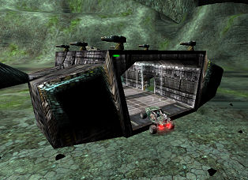
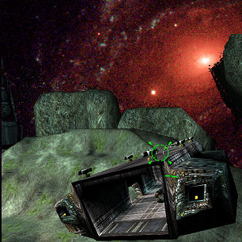

VitalOverdose/The DropShip Controller
Vehicle Dropship
By Darknet & vitaloverdose
Works online
this is my solution to a long standing problem with creating a dropship that can carry vehicles. I spent quite a long time on this script.The ship was built and made flyable by darknet and i then subclassed the ship and added the dropship system. Theres no reason this cant be a single class its just splitting it up this way allows 2 people to work on the same project at the same time. This system if in the alpha test stage, it had been tested online by a few people as well as myself and so far all the reports have been good. We did have a moving hatch for the back door but because you cant animate collision on meshes online the idea had to be scraped.Though i think ive worked out a way around it .
Darknets Dropship.

(Darknet)
//----------------------------------------------------------- // //----------------------------------------------------------- class DarkDropShip extends ONSattackCraft placeable; #exec OBJ LOAD FILE=..\animations\darkdropship_an.ukx var int CurrentIndex; var bool bDoorIsOpen; // AI hint Function Bool FastVehicle() { return true; } Function Bool Dodge(eDoubleClickDir DoubleClickMove) { if ( FRand() < 0.7 ) { VehicleMovingTime = Level.TimeSeconds + 1; Rise = 1; } return False; } simulated Function SpecialCalcBehindView(PlayerController PC, out actor ViewActor, out Vector CameraLocation, out Rotator CameraRotation ) { Local Vector CamLookAt, HitLocation, HitNormal, OffseTarget_Vector; Local Actor HitActor; Local Vector x, y, z; if (DesiredTPCamDistance < TPCamDistance) TPCamDistance = FMax(DesiredTPCamDistance, TPCamDistance - CameraSpeed * (Level.TimeSeconds - LastCameraCalcTime)); else if (DesiredTPCamDistance > TPCamDistance) TPCamDistance = FMin(DesiredTPCamDistance, TPCamDistance + CameraSpeed * (Level.TimeSeconds - LastCameraCalcTime)); GetAxes(PC.Rotation, x, y, z); ViewActor = self; CamLookAt = GetCameraLocationStart() + (TPCamLookat >> Rotation) + TPCamWorldOffset; OffseTarget_Vector = Vect(0, 0, 0); OffseTarget_Vector.X = -1.0 * TPCamDistance; CameraLocation = CamLookAt + (OffseTarget_Vector >> PC.Rotation); HitActor = Trace(HitLocation, HitNormal, CameraLocation, Location, true, Vect(40, 40, 40)); if ( HitActor != None && (HitActor.bWorldGeometry || HitActor == GetVehicleBase() || Trace(HitLocation, HitNormal, CameraLocation, Location, False, Vect(40, 40, 40)) != None ) ) CameraLocation = HitLocation; CameraRotation = Normalize(PC.Rotation + PC.ShakeRot); CameraLocation = CameraLocation + PC.ShakeOffset.X * x + PC.ShakeOffset.Y * y + PC.ShakeOffset.Z * z; } Function Died(Controller Killer, class<DamageType> damageType, Vector HitLocation) { Local Int I; if(Level.NetMode != NM_DedicatedServer) { for(i=0;i<TrailEffects.Length;I++) TrailEffects[i].Destroy(); TrailEffects.Length = 0; for(i=0; i<StreamerEffect.Length; I++) StreamerEffect[i].Destroy(); StreamerEffect.Length = 0; } Super.Died(Killer, damageType, HitLocation); } simulated Function Destroyed() { Local Int I; if(Level.NetMode != NM_DedicatedServer) { for(i=0;i<TrailEffects.Length;I++) TrailEffects[i].Destroy(); TrailEffects.Length = 0; for(i=0; i<StreamerEffect.Length; I++) StreamerEffect[i].Destroy(); StreamerEffect.Length = 0; } Super.Destroyed(); } simulated event DrivingStatusChanged() { Local Vector RotX, RotY, RotZ; Local Int I; Super.DrivingStatusChanged(); if (bDriving && Level.NetMode != NM_DedicatedServer && !bDropDetail) { GetAxes(Rotation,RotX,RotY,RotZ); if (TrailEffects.Length == 0) { TrailEffects.Length = TrailEffectPositions.Length; for(i=0;i<TrailEffects.Length;I++) if (TrailEffects[i] == None ) { TrailEffects[i] = Spawn(TrailEffectClass, self,, Location + (TrailEffectPositions[i] >> Rotation) ); TrailEffects[i].SetBase(self); TrailEffects[i].SetRelativeRotation( rot(0,32768,0) ); } } if (StreamerEffect.Length == 0) { StreamerEffect.Length = StreamerEffectOffset.Length; for(i=0; i<StreamerEffect.Length; I++) if (StreamerEffect[i] == None ) { StreamerEffect[i] = Spawn(StreamerEffectClass, self,, Location + (StreamerEffectOffset[i] >> Rotation) ); StreamerEffect[i].SetBase(self); } } } else { if (Level.NetMode != NM_DedicatedServer) { for(i=0;i<TrailEffects.Length;I++) TrailEffects[i].Destroy(); TrailEffects.Length = 0; for(i=0; i<StreamerEffect.Length; I++) StreamerEffect[i].Destroy(); StreamerEffect.Length = 0; } } } simulated Function Tick(float DeltaTime) { Local float EnginePitch, DesiredOpacity, DeltaOpacity, MaxOpacityChange, ThrustAmount; Local TrailEmitter T; Local int I; Local Vector RelVel; Local Bool NewStreamerActive, bIsBehindView; Local PlayerController PC; if(Level.NetMode != NM_DedicatedServer) { EnginePitch = 64.0 + VSize(Velocity)/MaxPitchSpeed * 32.0; SoundPitch = FClamp(EnginePitch, 64, 96); RelVel = Velocity << Rotation; PC = Level.GetLocalPlayerController(); if (PC != None && PC.ViewTarget == self) bIsBehindView = PC.bBehindView; else bIsBehindView = True; // Adjust Engine FX depending on being drive/velocity if (!bIsBehindView) { for(i=0; i<TrailEffects.Length; I++) TrailEffects[i].SetThrustEnabled(False); } else { ThrustAmount = FClamp(OutputThrust, 0.0, 1.0); for(i=0; i<TrailEffects.Length; I++) { TrailEffects[i].SetThrustEnabled(true); TrailEffects[i].SetThrust(ThrustAmount); } } // Update streamer opacity (limit max change speed) DesiredOpacity = (RelVel.X - StreamerOpacityRamp.Min)/(StreamerOpacityRamp.Max - StreamerOpacityRamp.Min); DesiredOpacity = FClamp(DesiredOpacity, 0.0, StreamerOpacityMax); MaxOpacityChange = DeltaTime * StreamerOpacityChangeRate; DeltaOpacity = DesiredOpacity - StreamerCurrentOpacity; DeltaOpacity = FClamp(DeltaOpacity, -MaxOpacityChange, MaxOpacityChange); if(!bIsBehindView) StreamerCurrentOpacity = 0.0; else StreamerCurrentOpacity += DeltaOpacity; if(StreamerCurrentOpacity < 0.01) NewStreamerActive = False; else NewStreamerActive = true; for(i=0; i<StreamerEffect.Length; I++) { if(NewStreamerActive) { if(!StreamerActive) { T = TrailEmitter(StreamerEffect[i].Emitters[0]); T.ResetTrail(); } StreamerEffect[i].Emitters[0].Disabled = False; StreamerEffect[i].Emitters[0].Opacity = StreamerCurrentOpacity; } else { StreamerEffect[i].Emitters[0].Disabled = true; StreamerEffect[i].Emitters[0].Opacity = 0.0; } } StreamerActive = NewStreamerActive; } Super.Tick(DeltaTime); } Function float ImpactDamageModifier() { Local float Multiplier; Local Vector X, Y, Z; GetAxes(Rotation, X, Y, Z); if (ImpactInfo.ImpactNorm Dot Z > 0) Multiplier = 0.75-(ImpactInfo.ImpactNorm dot Z); else Multiplier = 1.0; return Super.ImpactDamageModifier() * Multiplier; } Function Bool RecommendLongRangedAttack() { Return true; } Function Bool PlaceExitingDriver() // <<<<<< FIXME Fix to not be specific to this class after demo { Local Int I; Local Vector tryPlace, Extent, HitLocation, HitNormal, ZOffset; Extent = Driver.default.CollisionRadius * Vect(1,1,0); Extent *= 2; Extent.Z = Driver.default.CollisionHeight; ZOffset = Driver.default.CollisionHeight * Vect(0,0,1); if (Trace(HitLocation, HitNormal, Location + (ZOffset * 6), Location, False, Extent) != None ) return False; //avoid running Driver over by placing in direction perpendicular to velocity if ( VSize(Velocity) > 100 ) { tryPlace = Normal(Velocity cross Vect(0,0,1)) * (CollisionRadius + Driver.default.CollisionRadius ) * 1.25 ; if ( FRand() < 0.5 ) tryPlace *= -1; //randomly prefer other side if ( (Trace(HitLocation, HitNormal, Location + tryPlace + ZOffset, Location + ZOffset, False, Extent) == None && Driver.SetLocation(Location + tryPlace + ZOffset)) || (Trace(HitLocation, HitNormal, Location - tryPlace + ZOffset, Location + ZOffset, False, Extent) == None && Driver.SetLocation(Location - tryPlace + ZOffset)) ) return true; } for( i=0; i<ExitPositions.Length; I++) { if ( ExitPositions[0].Z != 0 ) ZOffset = Vect(0,0,1) * ExitPositions[0].Z; else ZOffset = Driver.default.CollisionHeight * Vect(0,0,2); if ( bRelativeExitPos ) tryPlace = Location + ( (ExitPositions[i]-ZOffset) >> Rotation) + ZOffset; else tryPlace = ExitPositions[i]; // First, do a line check (stops us passing through things on exit). if ( bRelativeExitPos && Trace(HitLocation, HitNormal, tryPlace, Location + ZOffset, False, Extent) != None ) continue; // Then see if we can place the player there. if ( !Driver.SetLocation(tryPlace) ) continue; return true; } return False; } //==================Mod off From ONSPR===================================== Function AltFire(optional float F) //avoid sending altfire to weapon { Super(Vehicle).AltFire(F); } static function StaticPrecache(LevelInfo L) { Super.StaticPrecache(L); L.AddPrecacheStaticMesh(StaticMesh'ONSDeadVehicles-SM.RAPTORexploded.RaptorWing'); L.AddPrecacheStaticMesh(StaticMesh'ONSDeadVehicles-SM.RAPTORexploded.RaptorTailWing'); L.AddPrecacheStaticMesh(StaticMesh'ONSDeadVehicles-SM.RAPTORexploded.RaptorGun'); L.AddPrecacheStaticMesh(StaticMesh'AW-2004Particles.Debris.Veh_Debris2'); L.AddPrecacheStaticMesh(StaticMesh'AW-2004Particles.Debris.Veh_Debris1'); L.AddPrecacheStaticMesh(StaticMesh'WeaponStaticMesh.RocketProj'); L.AddPrecacheMaterial(Material'AW-2004Particles.Energy.SparkHead'); L.AddPrecacheMaterial(Material'ExplosionTex.Framed.exp2_frames'); L.AddPrecacheMaterial(Material'ExplosionTex.Framed.exp1_frames'); L.AddPrecacheMaterial(Material'ExplosionTex.Framed.we1_frames'); L.AddPrecacheMaterial(Material'AW-2004Particles.Weapons.SmokePanels2'); L.AddPrecacheMaterial(Material'AW-2004Particles.Fire.NapalmSpot'); L.AddPrecacheMaterial(Material'EpicParticles.Fire.SprayFire1'); L.AddPrecacheMaterial(Material'VMVehicles-TX.AttackCraftGroup.RaptorColorRed'); L.AddPrecacheMaterial(Material'VMVehicles-TX.AttackCraftGroup.RaptorColorBlue'); L.AddPrecacheMaterial(Material'VMVehicles-TX.AttackCraftGroup.AttackCraftNoColor'); L.AddPrecacheMaterial(Material'AW-2004Particles.Weapons.TrailBlura'); L.AddPrecacheMaterial(Material'Engine.GRADIENT_Fade'); L.AddPrecacheMaterial(Material'VMVehicles-TX.AttackCraftGroup.raptorCOLORtest'); L.AddPrecacheMaterial(Material'AW-2004Particles.Fire.SmokeFragment'); } simulated Function UpdatePrecacheStaticMeshes() { Level.AddPrecacheStaticMesh(StaticMesh'ONSDeadVehicles-SM.RAPTORexploded.RaptorWing'); Level.AddPrecacheStaticMesh(StaticMesh'ONSDeadVehicles-SM.RAPTORexploded.RaptorTailWing'); Level.AddPrecacheStaticMesh(StaticMesh'ONSDeadVehicles-SM.RAPTORexploded.RaptorGun'); Level.AddPrecacheStaticMesh(StaticMesh'AW-2004Particles.Debris.Veh_Debris2'); Level.AddPrecacheStaticMesh(StaticMesh'AW-2004Particles.Debris.Veh_Debris1'); Level.AddPrecacheStaticMesh(StaticMesh'WeaponStaticMesh.RocketProj'); Super.UpdatePrecacheStaticMeshes(); } simulated Function UpdatePrecacheMaterials() { Level.AddPrecacheMaterial(Material'AW-2004Particles.Energy.SparkHead'); Level.AddPrecacheMaterial(Material'ExplosionTex.Framed.exp2_frames'); Level.AddPrecacheMaterial(Material'ExplosionTex.Framed.exp1_frames'); Level.AddPrecacheMaterial(Material'ExplosionTex.Framed.we1_frames'); Level.AddPrecacheMaterial(Material'AW-2004Particles.Weapons.SmokePanels2'); Level.AddPrecacheMaterial(Material'AW-2004Particles.Fire.NapalmSpot'); Level.AddPrecacheMaterial(Material'EpicParticles.Fire.SprayFire1'); Level.AddPrecacheMaterial(Material'VMVehicles-TX.AttackCraftGroup.RaptorColorRed'); Level.AddPrecacheMaterial(Material'VMVehicles-TX.AttackCraftGroup.RaptorColorBlue'); Level.AddPrecacheMaterial(Material'VMVehicles-TX.AttackCraftGroup.AttackCraftNoColor'); Level.AddPrecacheMaterial(Material'AW-2004Particles.Weapons.TrailBlura'); Level.AddPrecacheMaterial(Material'Engine.GRADIENT_Fade'); Level.AddPrecacheMaterial(Material'VMVehicles-TX.AttackCraftGroup.raptorCOLORtest'); Level.AddPrecacheMaterial(Material'AW-2004Particles.Fire.SmokeFragment'); Super.UpdatePrecacheMaterials(); } defaultproperties { MaxPitchSpeed=600.000000 TrailEffectPositions(0)=(X=-672.000000,Y=-480.000000,Z=-20.000000) TrailEffectPositions(1)=(X=-672.000000,Y=480.000000,Z=-20.000000) MaxThrustForce=256.000000 TurnDamping=500.000000 PitchTorqueMax=15.000000 PitchDamping=50.000000 RollDamping=60.000000 RedSkin=Texture'darkhoverskin.hoverskin.vehicletranportskin' BlueSkin=Texture'darkhoverskin.hoverskin.vehicletranportskin' VehicleMass=10.000000 VehiclePositionString="in a Dark DropShip" VehicleNameString="Dark DropShip" bCanBeBaseForPawns=True GroundSpeed=1500.000000 HealthMax=800.000000 Health=800 Mesh=SkeletalMesh'darkdropship_an.DropshipV5_3' }
Vitals DropShipSystem
Ive left the logs i used for testing in the code.
The ship has 7 weapons on it , mainly to give the bots something to do while the craft is in flight although im not 100% sure this function is working correctly but it wont effect the way the ship works in anyway if it dosent.
- The ship has to land on reletivly flat ground before it will release the vecs.
- The ship can carry as meny vehicles as you can fit on or in it but each vehicle adds weight to the dropship making it harder to fly.
- The system uses 3 simulated states to get the job done gravitysucks,VehicleParked VehicleFlying.
- The system can tell altitude of the craft as well as tilt.
- You have to land on relativly flat ground.

Class DropShipSystem extends DarkDropShip; var () Bool bEject_If_Inverted; // (could be fun..) var () float fMaxDistanceDownToCheck; // set at level stalz var () float MinGroundClearance; // a numb slightly > than the distance of // center point of the vec to the ground var () float scanrange; // the size of the cargobay var () Array < vector > TraceOffsets; // the craft fires trace lines to the // ground to measure altitude and Tilt // during the gravitySucks state var array < onsvehicle > cargorec; var () bool bSeekFlyingEscorts; var () Bool bSeekEscorts; var () bool bontheground; var () sound LandedSound; var () sound Takeoffsound; var () ephysics BackUpphysics; replication { reliable if (bNetDirty && role == role_authority) bontheground; } simulated function PostBeginPlay() { local rotator bonerot; log(self$"postbeginplay has been called"); Ksetactorgravscale(0.1); bonerot=getbonerotation( 'middle_middle_weapon'); //bonerot.yaw += rotation.yaw+32768; SetBoneRotation( 'middle_middle_weapon', bonerot ); SetBoneRotation( 'Left_Front_weapon', bonerot ); SetBoneRotation( 'Right_Front_weapon', bonerot ); SetBoneRotation( 'left_middle_weapon', bonerot ); SetBoneRotation( 'right_middle_weapon', bonerot ); SetBoneRotation( 'Right_rear_weapon', bonerot ); SetBoneRotation( 'Left_rear_weapon', bonerot ); } simulated function capturevecs () { local onsvehicle foundvec; // log(self$"capturevecs was called"); cargorec.length=0; foreach visiblecollidingactors(class'OnsVehicle',foundvec,Scanrange) { // log("capturevecs:found a vec"$foundvec$". so thats "$cargorec.length$"found so far"); if (( foundvec != self ) && (foundvec.bVehicleOnGround) && ( vsize( foundvec.velocity ) < 20)) { // log(foundvec$"will be made cargo"); Addweight(); cargorec.insert(0,1); cargorec[0] = foundvec; BackUpphysics = foundvec.physics; cargorec[0].bhardattach = True; cargorec[0].SetPhysics(PHYS_None ); // Remove the Physics from the Target Vehicle cargorec[0].Setbase(self ); cargorec[0].bAllowViewChange = bEject_If_Inverted; // Sets inverted optiOns on the Vec cargorec[0].bDriverCannotLeaveVehicle = true; // Locks the vehicles until the flight is over cargorec[0].setcollision( False , False , true ); // Switch off the collision on the Vehicle } } } simulated function EnlistEscorts() { local pawn foundpawn; // log("EnlistEscorts() has started"); foreach visiblecollidingactors(class'pawn',foundpawn,Scanrange*2) { // log("EnlistEscorts(): found a pawn = "$foundpawn); if ((foundpawn.isa('xbot')&&(!foundpawn.IsHumanControlled()) && (driver.controller.SameTeamAs(foundpawn.controller)) )) { // log("EnlistEscorts(): found It was an xbot +not human controlled = "); if (((bSeekFlyingEscorts) && foundpawn.IsA('onsraptor')) || ((bSeekEscorts ) && (foundpawn.isa('onsattackcraft')))) { // log("EnlistEscorts(): it wa a bot controlled vec = "); bot(foundpawn.controller).SetOrders('follow',Driver.Controller); } } } } simulated function releasevecs() { local int I; // log("Time to release the cargo"$cargorec.length); if (cargorec.length > 0) { // log("releasevecs():releasing"$cargorec[i]); for ( i=0 ; I< cargorec.length ; I++ ) { cargorec[i].bHardattach = false; cargorec[i].SetBase(None); // Releasing Target Vec cargorec[i].SetPhysics(BackUpphysics); // Returns old physics cargorec[i].setcollision(true , True , true); // Switches the collision back on. cargorec[i].bDriverCannotLeaveVehicle = False; // Unlocks the Vehicle } cargorec.length=0; } } simulated function TakeDamage(int Damage, Pawn instigatedBy, Vector Hitlocation, Vector Momentum, class<DamageType> DamageType) { momentum = momentum*0.01; if (damage>Health) Releasevecs(); super.takedamage( Damage, instigatedBy, Hitlocation, Momentum, DamageType); } simulated function subweight() { local float Thegrav; // log("subweight()"); thegrav=kgetactorgravscale() - (0.02*cargorec.length); ksetactorgravscale(thegrav); // log("subweight:new weight is "$thegrav); } simulated function Addweight() { //log("Addweight()"); local float Thegrav; thegrav=kgetactorgravscale()+ 0.02; ksetactorgravscale(thegrav); } simulated function loudnoise(sound sfx) { // log("loudnoise()"); makenoise(1.0); playsound(sfx); } simulated function Destroyed() { // log("Destroyed()"); ReleaseVecs(); // log("Destroyed:ReleaseVecs()"); DarkhoverSpawner(owner).Destroyed(); // log("informed "$owner$" im about to die"); super.Destroyed(); } simulated function bool CheckbOnTheGround() { local Vector TraceStart, TraceEnd, HitLocation,HitNormal; Local float Dist, MarkerDist, Total_DistanceDiff; Local int I; local actor HitActor; // log("CheckbOnTheGround()"); if (traceoffsets[0] != vect(0,0,0)) TraceOffsets .insert (0,1); // making blank space for first 'marker' trace for ( I = 0 ; I < TraceOffsets.length; I++) { TraceStart = Location + TraceOffsets[i]; TraceEnd = TraceStart - ( fMaxDistanceDownToCheck * Vect(0,0,1) ); HitActor = Trace(HitLocation , HitNormal , TraceEnd , TraceStart , true); Dist = VSize(TraceStart-HitLocation); if ( I == 0 ) MarkerDist = dist; else if ( HitActor != none ) Total_DistanceDiff = MarkerDist - Dist; } if ( MarkerDist <= MinGroundClearance) { // log('CheckbOnTheGround:Ground clearence is good'); if (Total_DistanceDiff < 100) { // log(Self$"CheckbOnTheGround:Total diff on ground clearence was less than 100 - returning true"); if ( vsize(velocity) < 10 ) { // log ("CheckbOnTheGround():velocity is now correct to im - returning true"); return true; } } } else // log ("CheckbOnTheGround:returning false"); return false; } /////////////////////////////////////////////////////////////////////////////////////////////// ///////////////////////////////////////////////////////////auto simulated state GravitySucks auto simulated state GravitySucks { simulated function Timer() // perform a scan { // log("=========state () GravitySucks:Timer() started"); bOnTheGround=CheckbOnTheGround(); if ( bOnTheGround == true ) { // log("GravitySucks:Timer:I am on the ground as bOnTheGround ="$bOnTheGround); if (landedsound!=None) Loudnoise(landedsound); GotoState('VehicleParked'); // log("GravitySucks:Timer():GotoState('VehicleParked') was just called'"); return; } // log("GravitySucks:Timer():Im NOT on the ground this time'"); SetTimer(0.1 , False); super.timer(); } Begin: // log("==========state GravitySucks:state code has been called"); SetTimer(0.1 , False); } //////////////////////////////////////////////////////////////////////////////////////////////// //////////////////////////////////////////// simulated state VehicleParked / simulated state VehicleParked { simulated function bool TryToDrive(Pawn P) { // log(" TryToDrive():an attempt to drive was made by"$p); super.TryToDrive(P); } simulated function ClientKDriverEnter(PlayerController PC) { // log("VehicleParked:ClientKDriverenter START"); Capturevecs (); // log("VehicleParked:ClientKDriverenter enlistescorts() - has been called and returned"); enlistescorts(); // log("VehicleParked:ClientKDriverenter enlistescorts() - has been called and returned"); GotoState ( 'VehicleFlying' ); // log("VehicleParked:ClientKDriverenter gotostate 'VehicleFlying' has been called"); super.ClientKDriverEnter( PC ); } simulated function KDriverEnter(pawn p) { // log("VehicleParked:KDriverenter START"); Capturevecs (); // log("VehicleParked:KDriverenter Capturevecs () has been called and returned"); enlistescorts(); // log("VehicleParked:KDriverenter enlistescorts () has been called and returned"); GotoState ( 'VehicleFlying' ); // log("VehicleParked:KDriverenterGotoState ( 'VehicleFlying' ) has been called and returned"); super.KDriverEnter( P ); } Begin: // log("now in state () VehicleParked start of state code"); } //////////////////////////////////////////////////////////////////////////////////////////////////// //////////////////////////////////////////////////////////////////////////////////////////////////// //////////////////////////////////////////////////////////////// state VehicleFlying state VehicleFlying { simulated function ClientKDriverLeave(PlayerController PC) { // log("VehicleFlying:ClientKDriverLeave releasevecs() has been called and returned "); // log("VehicleFlying:ClientKDriverLeave releasevecs() has been called and returned"); releasevecs(); // log("VehicleFlying:ClientKDriverLeave subweight() has been called and returned"); subweight(); // log("VehicleFlying:ClientKDriverLeave goto state GravitySucks has been called "); GotoState('GravitySucks'); super.clientkDriverleave(PC); } simulated event bool KDriverLeave( bool bForceLeave ) { // log("VehicleFlying:KDriverLeave * Started *"); releasevecs(); // log("VehicleFlying:KDriverLeave:releasevecs() has been called and returned"); subweight(); // log("VehicleFlying:KDriverLeave:subweight() has been called and returned"); GotoState('GravitySucks'); // log("VehicleFlying:KDriverLeave :GotoState('GravitySucks') has been called and returned"); super.kDriverleave(bForceLeave); } begin: if (takeoffsound!=None) loudnoise(takeoffsound); // log("now in state VehicleFlying"); } defaultproperties { fMaxDistanceDownToCheck=5000.000000 MinGroundClearance=260.000000 scanrange=1024.000000 TraceOffsets(0)=(X=100.000000) TraceOffsets(1)=(X=-100.000000) TraceOffsets(2)=(Y=100.000000) TraceOffsets(3)=(Y=-100.000000) bSeekFlyingEscorts=True bSeekEscorts=True DriverWeapons(0)=(WeaponClass=Class'darkhover.Mortician_Head',WeaponBone="middle_front_weapon") PassengerWeapons(0)=(WeaponPawnClass=Class'OnslaughtFull.ONSMASSideGunPawn',WeaponBone="right_front_weapon") PassengerWeapons(1)=(WeaponPawnClass=Class'OnslaughtFull.ONSMASSideGunPawn',WeaponBone="left_front_weapon") PassengerWeapons(2)=(WeaponPawnClass=Class'OnslaughtFull.ONSMASSideGunPawn',WeaponBone="right_middle_weapon") PassengerWeapons(3)=(WeaponPawnClass=Class'OnslaughtFull.ONSMASSideGunPawn',WeaponBone="left_middle_weapon") PassengerWeapons(4)=(WeaponPawnClass=Class'OnslaughtFull.ONSMASSideGunPawn',WeaponBone="left_rear_weapon") PassengerWeapons(6)=(WeaponPawnClass=Class'OnslaughtFull.ONSMASSideGunPawn',WeaponBone="right_rear_weapon") VehicleMass=12.000000 TPCamDistance=1400.000000 bPathColliding=True }